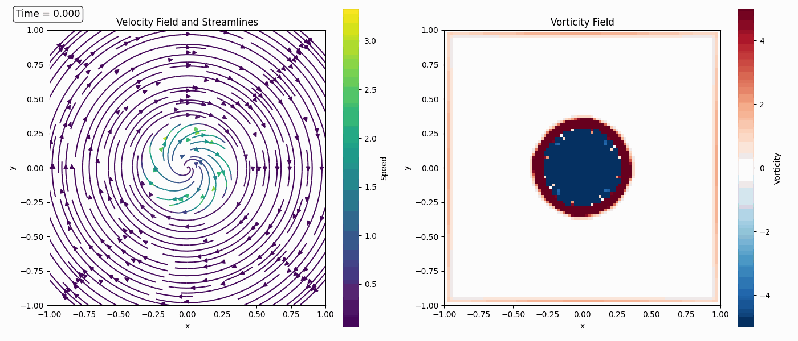
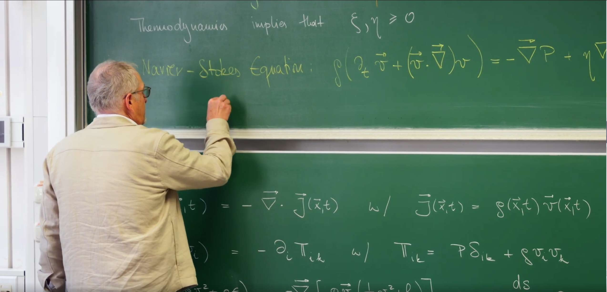
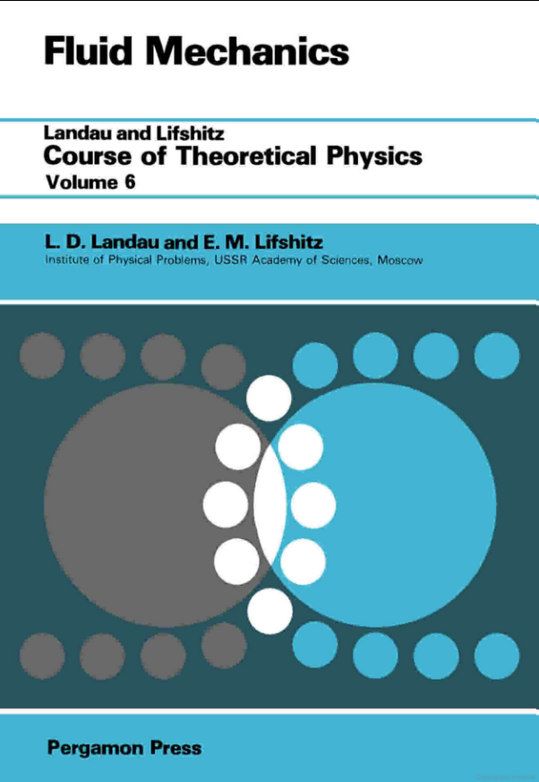
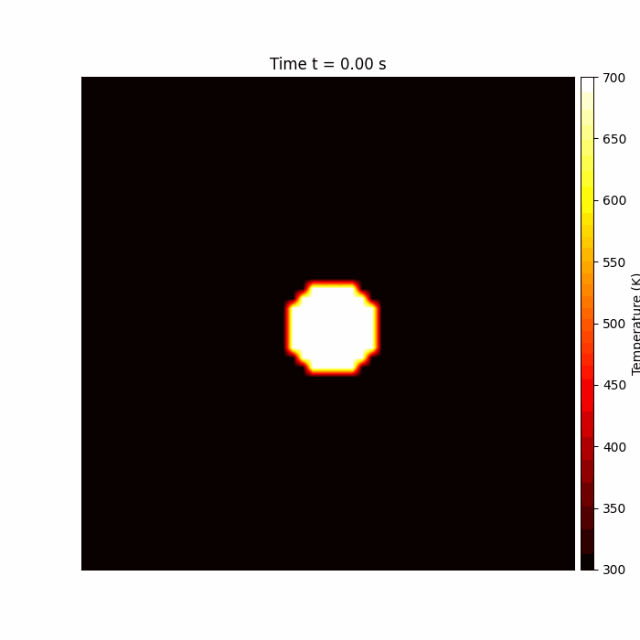

引言：从理想流体到真实流体——引入耗散与不可逆性¶
上一节课通过应用质量、动量和能量这三大基本守恒律 (conservation laws) ，成功构建了理想流体 (ideal fluid) 的动力学框架，其核心成果是欧拉方程 (Euler Equation) 。理想流体模型建立在两个关键假设之上：流体内部没有摩擦（即无粘性）且没有热量传递，这意味着所有过程都是可逆的 (reversible) ，每个流体元的熵在运动中保持不变（即等熵流, Isentropic Flow） 。
然而，这个优雅的理论图像与我们的日常经验形成了鲜明对比。例如，将奶油搅入咖啡后，它会均匀散开，但从未见过散开的奶油自发地重新聚集起来。这种现象的不可逆性 (irreversibility) 是真实世界的一个基本特征。欧拉方程因其时间反演对称性 (time-reversal symmetry) 而无法描述这类耗散过程——一个理想流体运动的影片倒着播放，其展现的运动轨迹仍然完全符合物理定律。
这节课将从理想化的可逆物理世界到更符合现实的不可逆世界。真实流体存在两个核心的耗散机制：
-
内部摩擦 (Internal Friction) ，宏观上表现为粘性 (viscosity) 。
-
内部热量传递 (Internal Heat Transfer) ，宏观上表现为热传导 (heat conduction) 。
这两种现象正是第24讲昂萨格理论中探讨的不可逆过程 (irreversible processes) 的具体体现。它们是宏观世界中熵产生的微观根源，会将有序的宏观动能不可逆地转化为无序的内能（热）。
为了将这些物理现实融入理论，必须修正上一讲推导出的动量通量张量 (momentum flux tensor) 和能量流通量 (energy flux) 。Erwin Frey 教授引入新的项来描述由速度梯度驱动的粘性应力张量 (viscous stress tensor) 和由温度梯度驱动的热流密度 (heat flux density) 。通过这个过程来打破欧拉方程的时间对称性，推导出更普适的纳维-斯托克斯方程 (Navier-Stokes Equation) ，并最终通过构建熵平衡方程 (entropy balance equation) ，将流体动力学与热力学第二定律深刻地联系起来。

1. 耗散应力张量：量化不可逆的内部摩擦¶
在上一讲中，Erwin Frey 教授推导了理想流体的动量守恒方程，其核心是动量通量张量 \(\Pi_{ik} = P \delta_{ik} + \rho v_i v_k\)。这个表达式描述了两种可逆的动量传递方式：各向同性的压力和宏观的对流。然而，这个理想化的模型缺少了真实世界中至关重要的一个环节：耗散 (dissipation) 。为了描述由内部摩擦产生的不可逆的动量交换，因此需要对这个理想的动量通量张量进行修正。
这节课的核心任务，就是从基本物理原则出发，为这个耗散过程建立数学描述，即构建粘性应力张量 (viscous stress tensor) 的本构关系。
1.1 动量通量张量的修正¶
从普适的动量守恒定律的局域形式出发，对于没有外部体力源的情况，该定律表述为：
其中 \(\rho\) 是质量密度，\(v_i\) 是速度场分量，\(\Pi_{ik}\) 是动量通量密度张量。
为了清晰地分离可逆与不可逆过程，将作用在流体微元表面上的总力，即总应力张量 (total stress tensor) \(\Sigma_{ik}\)，分解为两部分：
-
静水压力 (Hydrostatic Pressure) \(-P \delta_{ik}\)：这是理想流体中唯一存在的表面力，源于分子无规则的热运动，其作用是各向同性的压缩。这里的负号是一个约定，表示正压力 \(P\) 产生的是压缩应力。
-
粘性应力张量 (Viscous Stress Tensor) \(\Sigma_{ik}'\)：这正是为描述真实流体而引入的新项，也称为耗散应力张量 (dissipative stress tensor) 。它代表了由于流体内部速度差异（即内摩擦）所引起的、额外的、具有方向性的动量交换。
将总应力张量代入，就得到了适用于真实流体的总动量通量张量：
现在，核心任务变成了为这个未知的 \(\Sigma_{ik}'\) 找到一个本构关系 (constitutive relation) ，即它如何依赖于流体的局部运动状态。
所谓本构关系，并非像动量守恒那样的普适基本定律，而是一个描述特定材料或介质宏观行为的唯象方程。它的作用是建立起材料内部的“响应”（如应力、热流、电流）与驱动该响应的“刺激”（如形变、温度梯度、电场）之间的数学联系。这个关系中包含了表征材料特性的参数，例如固体的杨氏模量、导体的电导率，以及即将要确定的流体的粘性系数。
因此，为\(\Sigma_{ik}'\)寻找本构关系，就是要回答：对于正在研究的这种流体，其内部的摩擦力是如何由其流动方式（即速度场梯度）精确决定的？
1.2 粘性应力张量的本构关系¶
对于牛顿流体 (Newtonian fluids) ，一个核心假设是粘性应力与速度梯度 \(\partial_k v_i\) 呈线性关系。这完全符合在第24讲中学到的昂萨格线性响应理论 (Onsager's linear response theory) 的精神：在接近热力学平衡时，由热力学力（此处为速度梯度）驱动的通量（此处为动量通量 \(\Sigma_{ik}'\)）与该力呈线性关系。
为了构建这个关系，首先需要从物理上理解速度梯度张量 \(\partial_k v_i\) 所描述的运动模式。从纯数学角度看，任何一个二阶张量（或方块矩阵），都可以分解为一个对称部分和一个反对称部分：
-
反对称部分 : \(\frac{1}{2}(\partial_k v_i - \partial_i v_k)\)，它描述了流体微元的刚性转动 (rigid-body rotation) ，即涡旋。想象一个微小的流体方块作为一个整体在旋转，其内部各点之间的相对位置保持不变，因此不会产生“摩擦”或能量耗散。所以，粘性应力与这部分运动无关。
-
对称部分 : \(e_{ik} = \frac{1}{2}(\partial_k v_i + \partial_i v_k)\)，它被称为形变率张量 (rate-of-strain tensor) ，描述了流体微元的形状和体积的变化 (deformation) 。正是这种导致相邻流体层发生相对位移的形变，才是内部摩擦的真正来源。
因此，\(\Sigma_{ik}'\) 必然只依赖于对称的形变率张量 \(e_{ik}\)。为了进一步区分不同类型的形变，将 \(e_{ik}\) 分解为一个迹部和一个无迹部分：
-
迹部 (Trace Part - 膨胀/压缩): 张量的迹 \(\partial_\ell v^\ell = \nabla \cdot \mathbf{v}\) 是一个标量，描述了流体微元体积的变化率（膨胀率）。
-
对称无迹部分 (Symmetric Traceless Part - 剪切): \(\frac{1}{2}(\partial_i v_k + \partial_k v_i - \frac{2}{3}\delta_{ik}\partial_\ell v^\ell)\)，这个张量描述了在保持体积不变的情况下，流体微元形状的变化率（剪切形变率）。
所谓的剪切 (Shear)，可以想象一叠扑克牌。如果你把手掌平放在最上面的牌上，然后水平向前推，整叠牌就会从一个长方形变成一个平行四边形。这个过程中，每张牌相对于它下面的牌都发生了滑动，但整叠牌的总体积（或面积）没有改变。这种“层与层之间相互滑动导致的形状改变”，就是剪切。在流体中，当一层流体以不同于邻近层的速度流动时，就会发生剪切。它描述的是流体元的形状改变。
“迹”在数学上是指一个矩阵对角线元素之和。在流体动力学中，速度梯度张量的“迹” (\(\nabla \cdot \mathbf{v}\)) 有一个非常直观的物理意义。想象我们之前那个方形流体元，它的迹部描述的是这个方块自身的膨胀或压缩。如果迹是正的，意味着流体元像气球一样正在膨胀，体积变大。如果迹是负的，意味着流体元正在被压缩，体积变小。在流体中，迹部代表了流体运动中纯粹体积改变的部分，与形状改变无关。
无迹这个概念是前两个的结合。既然我们知道“迹部”代表了纯粹的体积变化，那么“无迹”就意味着“没有体积变化”。在流体中，为了在数学上精确地分离出纯粹的形状改变（即剪切），需要从总的形变中“减掉”或“剔除”掉体积改变的部分。经过这个操作后剩下的部分，就是无迹的，它代表了一种只改变形状、不改变体积的运动。这正是“剪切”的精确数学描述。因此，与剪切粘度 \(\eta\) 相乘的那一项，就是一个对称无迹张量。
对于一个各向同性 (isotropic) 的流体（其物理性质不依赖于方向），粘性应力张量 \(\Sigma_{ik}'\) 与这两个形变部分之间的最一般的线性关系，必然由两个独立的标量系数来刻画。这两个系数正是昂萨格系数 (Onsager coefficients) 。
首先，“各向同性”意味着流体没有“特殊方向”。就像一杯静止的水。无论你从哪个方向去测量它的性质（比如粘稠度），得到的结果都是一样的。它不像木头，沿着纹理的方向和垂直于纹理的方向，性质就不同。这意味着描述流体行为的物理定律，其数学形式不能依赖于我们如何选择坐标系。如果我们将坐标系旋转一下，方程本身的形式必须保持不变。这是一个极其强大的对称性约束。
现在任务是，用流体的运动（由速度梯度张量 \(\partial_k v_i\) 描述）来“构建”出内部的摩擦力（由粘性应力张量 \(\Sigma'_{ik}\) 描述）。这个构建过程就像用“积木”搭房子，必须遵守“各向同性”和“线性”这两个规则。
既然已经知道，速度梯度张量可以被分解为两个物理上完全独立的部分：迹部和无迹部。对称性原理告诉我们，一个各向同性的关系，只能将一个张量与另一个同类型、同方向的张量联系起来，它们之间的“胶水”只能是一个简单的标量（一个数字）。不能把一个描述剪切的张量，变成一个描述纯体积变化的张量。
搭建过程：
-
流体内部抵抗形状改变的应力，必然正比于描述形状改变的张量 \(S_{ik}\)。我们引入一个比例系数（标量），称之为剪切粘度 \(\eta\) (Shear Viscosity)。
-
流体内部抵抗体积改变的应力，必然正比于描述体积改变的张量 \(T_{ik}\)。我们引入另一个独立的比例系数，称之为体积粘度 \(\xi\) (Bulk Viscosity)。
将这两部分贡献线性地加起来，就得到了唯一可能的、最一般的线性关系：
\[\Sigma'_{ik} = (2\eta) \cdot S_{ik} + \xi \cdot T_{ik}\]（这里出现因子2是由于历史定义，不影响物理本质）。
之所以“必然由两个独立的标量系数” 来刻画，是因为流体的形变被我们从物理上完全地分解为了两种截然不同且相互独立的模式：形状改变和体积改变。
-
一个流体元的形状可以改变而体积不变（纯剪切）。
-
一个流体元的体积可以改变而形状不变（均匀膨胀）。
因为这两种形变是物理上独立的，所以流体对这两种形变的“抵抗能力”也必须是相互独立的，需要用两个独立的物理参数来描述。\(\eta\) 就是对形状改变的抵抗力，\(\xi\) 就是对体积改变的抵抗力。
最终，我们得到粘性应力张量的本构方程：
其中，\(\eta\) 和 \(\xi\) 分别是剪切粘度和体积粘度的昂萨格系数。这直接连接到了第24讲的核心思想。昂萨格理论告诉我们，在接近平衡态时，任何由热力学力 \(X_b\) 驱动的不可逆通量 \(J_a\)，都与力呈线性关系 \(J_a = \sum_b L_{ab} X_b\)，其中的比例系数 \(L_{ab}\) 就是昂萨格系数。
在流体的情况中：
-
热力学力 (\(X_b\)) 是导致系统偏离平衡的速度梯度。
-
不可逆通量 (\(J_a\)) 是因此产生的耗散动量流，即粘性应力 \(\Sigma'_{ik}\) 。
我们推导出的本构方程，正是这个抽象的昂萨格关系在流体力学中的一个具体、真实的体现。因此，连接“力”和“通量”的比例系数 \(\eta\) 和 \(\xi\)，按照定义，就是昂萨格系数。
1.3 粘性系数的物理意义¶
-
剪切粘度 (Shear Viscosity) \(\eta\): 它是剪切应力（由对称无迹部分产生）与剪切形变率之间的比例系数。它衡量了流体抵抗形状改变的能力。想象在两层流体之间施加一个切向力使其相互滑过，剪切粘度就是它们之间“粘滞”程度的度量，如同蜂蜜比水更“粘稠”。从动力学角度看，它是动量扩散 (momentum diffusion) 的根源：动量会从高速流体层“扩散”到低速流体层。
-
体积粘度 (Bulk Viscosity) \(\xi\): 它是各向同性粘性应力（由迹部产生）与体积变化率之间的比例系数。它衡量了流体在快速压缩或膨胀时，除了热力学压力提供的可逆抵抗之外，额外抵抗体积改变的能力。对于单原子理想气体，由于没有内部自由度，\(\xi=0\)。但对于多原子分子流体（如二氧化碳），体积粘度与分子内部自由度（如转动、振动）的弛豫时间 (relaxation time) 有关，它量化了声波吸收等耗散过程。
1.4 Python 模拟 II：二维涡旋的粘性衰减与涡量扩散¶
为了动态地、直观地理解粘性的作用，我们将模拟一个更生动的例子：一个二维涡旋在粘性流体中如何随时间衰减。这个过程直接展示了粘性作为一种动量扩散 (momentum diffusion) 机制的物理本质。
下面的模拟将求解二维不可压缩纳维-斯托克斯方程的数值解，其形式为：
其中 \(\nu = \eta/\rho\) 是运动粘度 (kinematic viscosity) 。这个方程包含了两个核心的动力学过程：
- 非线性对流项 \((\vec{v} \cdot \nabla)\vec{v}\) : 源自欧拉方程，描述了流体如何“携带”自身的动量进行运动。
- 粘性扩散项 \(\nu \nabla^2 \vec{v}\) : 我们本节引入的新项，描述了动量如何因内摩擦而从高速区扩散到低速区。
我们将同时可视化速度场 (velocity field) 和涡量场 (vorticity field) 。涡量 \(\omega = \nabla \times \vec{v}\) 是一个衡量流体微元局域“旋转”程度的物理量，它的演化能更清晰地揭示粘性的扩散效应。
具体物理过程:
-
驱动力 : 初始涡旋中，核心的高速区和外围的低速区之间存在巨大的速度梯度，这对应于涡量场中的那个尖锐的峰。
-
粘性作用 : 这个速度梯度产生了强大的粘性剪切应力。这个应力不断地将动量从高速旋转的内层流体传递（或“扩散”）到速度较慢的外层流体。这个过程在涡量场中的表现就是涡量从高浓度区域向低浓度区域扩散。粘性项 \(\eta \nabla^2 \vec{v}\) 在动力学方程中的核心作用：它是一个耗散项，其效果是让任何不均匀的速度分布（和涡量分布）随着时间衰减和均一化。
-
能量耗散 : 这个动量传递的过程伴随着机械能到内能（热）的转化，是一个典型的不可逆耗散过程。在模拟中，系统的总动能会随时间单调递减。
-
最终结果 : 粘性作用持续不断地“抹平”速度梯度，最终会使整个系统的速度场变得均匀（在这里是均匀静止），涡量处处为零，系统达到能量最低的平衡态。
import numpy as np
import matplotlib.pyplot as plt
import matplotlib.animation as animation
# --- Simulation Parameters ---
L = 2.0 # Domain size
nx, ny = 100, 100 # Grid resolution
nu = 0.005 # Kinematic viscosity (higher for visible effect)
dt = 0.005 # Time step
n_steps = 100 # Number of time steps
n_steps_per_frame = 5 # Steps between frames
# --- Grid Setup ---
x = np.linspace(-L/2, L/2, nx)
y = np.linspace(-L/2, L/2, ny)
X, Y = np.meshgrid(x, y)
dx = L / (nx - 1)
# --- Initial Velocity Field (Rankine Vortex) ---
# Create a more realistic vortex with both rotational core and potential flow outer region
r = np.sqrt(X**2 + Y**2)
R_core = 0.3 # Core radius
# Velocity components for a Rankine vortex
# Inside core (solid body rotation)
inside = r <= R_core
u = np.zeros_like(X)
v = np.zeros_like(Y)
# Inside the core: solid body rotation (v = omega * r)
u[inside] = Y[inside] * 2.0 / R_core**2
v[inside] = -X[inside] * 2.0 / R_core**2
# Outside the core: potential vortex (v = Gamma / (2*pi*r))
outside = r > R_core
u[outside] = Y[outside] / (2 * np.pi * r[outside]**2)
v[outside] = -X[outside] / (2 * np.pi * r[outside]**2)
# Scale the vortex
u *= 0.5
v *= 0.5
# --- Vorticity Calculation ---
def calculate_vorticity(u, v, dx):
"""Calculate vorticity field from velocity field"""
dudy = (u[2:, 1:-1] - u[:-2, 1:-1]) / (2*dx)
dvdx = (v[1:-1, 2:] - v[1:-1, :-2]) / (2*dx)
vorticity = dvdx - dudy
return vorticity
# --- Numerical Solver (Navier-Stokes with viscous terms) ---
def viscous_step(u, v, nu, dt, dx):
"""Solve Navier-Stokes equations with viscous terms"""
# Temporary arrays
u_new = u.copy()
v_new = v.copy()
# Update interior points
for i in range(1, ny-1):
for j in range(1, nx-1):
# Second derivatives (Laplacians)
d2u_dx2 = (u[i, j+1] - 2*u[i, j] + u[i, j-1]) / dx**2
d2u_dy2 = (u[i+1, j] - 2*u[i, j] + u[i-1, j]) / dx**2
d2v_dx2 = (v[i, j+1] - 2*v[i, j] + v[i, j-1]) / dx**2
d2v_dy2 = (v[i+1, j] - 2*v[i, j] + v[i-1, j]) / dx**2
# First derivatives
du_dx = (u[i, j+1] - u[i, j-1]) / (2*dx)
du_dy = (u[i+1, j] - u[i-1, j]) / (2*dx)
dv_dx = (v[i, j+1] - v[i, j-1]) / (2*dx)
dv_dy = (v[i+1, j] - v[i-1, j]) / (2*dx)
# Nonlinear terms (advection)
DuDt_conv = -u[i, j]*du_dx - v[i, j]*du_dy
DvDt_conv = -u[i, j]*dv_dx - v[i, j]*dv_dy
# Diffusion terms (viscous)
DuDt_diff = nu * (d2u_dx2 + d2u_dy2)
DvDt_diff = nu * (d2v_dx2 + d2v_dy2)
# Update velocities
u_new[i, j] = u[i, j] + dt * (DuDt_conv + DuDt_diff)
v_new[i, j] = v[i, j] + dt * (DvDt_conv + DvDt_diff)
# Boundary conditions (zero velocity at boundaries)
u_new[0, :] = 0.0
u_new[-1, :] = 0.0
u_new[:, 0] = 0.0
u_new[:, -1] = 0.0
v_new[0, :] = 0.0
v_new[-1, :] = 0.0
v_new[:, 0] = 0.0
v_new[:, -1] = 0.0
return u_new, v_new
# --- Visualization Setup ---
fig, (ax1, ax2) = plt.subplots(1, 2, figsize=(14, 6))
# Left subplot: Velocity field with streamlines
ax1.set_xlim(-L/2, L/2)
ax1.set_ylim(-L/2, L/2)
ax1.set_xlabel('x')
ax1.set_ylabel('y')
ax1.set_title('Velocity Field and Streamlines')
ax1.set_aspect('equal')
# Stream plot for velocity field
speed = np.sqrt(u**2 + v**2)
strm = ax1.streamplot(X, Y, u, v, color=speed, cmap='viridis', density=1.5)
fig.colorbar(strm.lines, ax=ax1, label='Speed')
# Right subplot: Vorticity field
ax2.set_xlim(-L/2, L/2)
ax2.set_ylim(-L/2, L/2)
ax2.set_xlabel('x')
ax2.set_ylabel('y')
ax2.set_title('Vorticity Field')
ax2.set_aspect('equal')
# Calculate initial vorticity
initial_vorticity = np.zeros_like(X)
vorticity_interior = calculate_vorticity(u, v, dx)
initial_vorticity[1:-1, 1:-1] = vorticity_interior
# Vorticity visualization
im = ax2.imshow(initial_vorticity, extent=[-L/2, L/2, -L/2, L/2],
origin='lower', cmap='RdBu_r', vmin=-5, vmax=5)
fig.colorbar(im, ax=ax2, label='Vorticity')
# Time text
time_text = fig.text(0.02, 0.95, '', fontsize=12,
bbox=dict(boxstyle="round", facecolor='white', alpha=0.8))
# Energy tracking
energies = []
# --- Animation Function ---
def animate(frame):
global u, v
# Perform several time steps between frames for smoother animation
kinetic_energy = 0
for _ in range(n_steps_per_frame):
u, v = viscous_step(u, v, nu, dt, dx)
# Calculate kinetic energy
kinetic_energy += 0.5 * np.sum(u**2 + v**2) * dx**2
energies.append(kinetic_energy)
# Update stream plot (clear and redraw)
for artist in ax1.collections + ax1.lines:
artist.remove()
speed = np.sqrt(u**2 + v**2)
strm = ax1.streamplot(X, Y, u, v, color=speed, cmap='viridis', density=1.5)
# Update vorticity plot
vorticity = np.zeros_like(X)
vorticity_interior = calculate_vorticity(u, v, dx)
vorticity[1:-1, 1:-1] = vorticity_interior
im.set_array(vorticity)
# Update time text
current_time = frame * n_steps_per_frame * dt
time_text.set_text(f'Time = {current_time:.3f}')
return strm.lines, im
# --- Create Animation ---
ani = animation.FuncAnimation(
fig, animate, frames=n_steps//n_steps_per_frame,
interval=100, blit=False, repeat=True)
plt.tight_layout()
#plt.show()
# To save the animation:
ani.save('vortex_decay_detailed.gif', writer='pillow', fps=10)

速度场： 随着时间推移，流线变得稀疏，涡旋的旋转速度显著下降（颜色变暗），其影响范围也逐渐扩大。这是涡旋宏观上的减速和扩张。
涡量场： 可以清晰地看到，集中的涡量“核”正在向外扩散。其中心峰值不断降低，而影响的范围不断扩大，边界也变得模糊。这个过程在数学和物理上，与一滴墨水在静水中扩散或一个热点在金属板上传导完全相同。
2. 纳维-斯托克斯方程：流体动力学的主宰¶
上一小节成功地运用对称性原理和线性响应理论，为流体内部的摩擦力—— 粘性应力张量 (viscous stress tensor) \(\Sigma'_{ik}\)——构建了其本构关系。这补全了真实流体的物理图像中至关重要的一块拼图。现在，万事俱备，可以将这个描述耗散的张量代回到普适的动量守恒定律中。
这个过程将实现这节课的核心目标：从上一节课描述理想流体的欧拉方程 (Euler Equation) 出发，推导出能够描述真实、有粘性流体运动的、更具普适性的主宰方程——纳维-斯托克斯方程 (Navier-Stokes Equation) 。
纳维-斯托克斯方程是描述粘性不可压缩流体动量守恒的运动方程，由法国科学家C.L.M.H.纳维于1821年和英国物理学家G.G.斯托克斯于1845年分别独立建立。它被誉为流体力学的"灵魂"，是描述流体运动的基本方程，广泛应用于航空航天、气象学、海洋学、工程设计等领域。
这个方程是非线性偏微分方程，求解非常困难，目前只有在某些特定条件下才能得到精确解。它也是克雷数学研究所列出的"七大千禧年难题"之一，关于其解的存在性与光滑性问题尚未解决。

教授在课堂上提到一本书《Landau & Lifshitz Vol. 6》，是流体力学很好的教材，由列夫·朗道（Lev Landau）和叶甫根尼·利夫希茨（Evgeny Lifshitz）合著的一系列物理学教科书中的第六卷，通常被称为“朗道-利夫希茨理论物理教程”。

2.1 方程的推导¶
纳维-斯托克斯方程推导的出发点是作用于一个“流体元”上的牛顿第二定律，也即动量守恒的拉格朗日形式 (Lagrangian form) ：
这个方程的左侧是流体元的“质量(\(\rho\))乘以加速度(\(Dv_i/Dt\))”，右侧是作用在该流体元上的表面力的净效应（总应力张量的散度）。
-
代入总应力张量：将第1小节中定义的总应力张量 \(\Sigma_{ik} = -P \delta_{ik} + \Sigma_{ik}'\) 代入上式：
\[\rho \frac{D v_i}{D t} = \partial_k (-P \delta_{ik} + \Sigma_{ik}') = -\partial_i P + \partial_k \Sigma_{ik}'\]
与理想流体的欧拉方程相比，方程右侧多出了一项粘性力密度 (viscous force density) \(\partial_k \Sigma_{ik}'\)。
-
代入本构关系：接下来，将粘性应力张量的本构关系代入，并计算其散度 \(\partial_k \Sigma_{ik}'\)。
\[\partial_k \Sigma_{ik}' = \partial_k \left[ \eta \left( \partial_i v_k + \partial_k v_i - \frac{2}{3} \delta_{ik} \partial_\ell v^\ell \right) + \xi \delta_{ik} \partial_\ell v^\ell \right]\]假设粘性系数 \(\eta\) 和 \(\xi\) 在空间上是均匀的常数，经过一些张量运算后，可以将其整理成更直观的矢量形式。
-
得到最终方程：将上述结果与物质导数的欧拉形式 \(\frac{D \mathbf{v}}{D t} = \frac{\partial \mathbf{v}}{\partial t} + (\mathbf{v} \cdot \nabla) \mathbf{v}\) 结合，我们便得到了完整形式的纳维-斯托克斯方程： \(\(\rho \left( \frac{\partial \mathbf{v}}{\partial t} + (\mathbf{v} \cdot \nabla) \mathbf{v} \right) = -\nabla P + \eta \nabla^2 \mathbf{v} + \left(\xi + \frac{\eta}{3} \right) \nabla (\nabla \cdot \mathbf{v})\)\) 这个方程是流体动力学的基石，它深刻地描绘了流体运动中惯性、压力与内摩擦之间的动态平衡。
2.2 方程的剖析¶
纳维-斯托克斯方程是牛顿第二定律在流体连续介质中的宏伟体现，方程的每一项都对应着一种清晰的物理作用力（密度为\(\rho\)）：
-
惯性项 (Inertia Term): \(\rho \left( \frac{\partial \mathbf{v}}{\partial t} + (\mathbf{v} \cdot \nabla) \mathbf{v} \right)\)。这是流体微元的“质量乘以加速度”，即物质导数 (Material Derivative) 。它包含了从固定观察者角度看到的局域加速度 \(\frac{\partial \mathbf{v}}{\partial t}\)，以及由于流体元运动到速度不同新位置而产生的对流加速度 \((\mathbf{v} \cdot \nabla) \mathbf{v}\)。这一项在欧拉方程和纳维-斯托克斯方程中完全相同。
-
压力梯度力 (Pressure Gradient Force) : \(-\nabla P\)。这是单位体积流体受到的由压力差驱动的保守力，方向从高压区指向低压区。它也是可逆过程的一部分，同样存在于欧拉方程中。
-
粘性力 (Viscous Force) : \(\eta \nabla^2 \mathbf{v} + \left(\xi + \frac{\eta}{3} \right) \nabla (\nabla \cdot \mathbf{v})\)。这正是区分真实流体与理想流体的核心。它是单位体积流体受到的由内部摩擦产生的、不可逆的耗散力。
- 动量扩散 : 其中的拉普拉斯算子项 \(\eta \nabla^2 \mathbf{v}\) 具有极其深刻的物理内涵。在数学上，它与我们在第26讲中遇到的扩散方程（如热传导方程 \(\partial_t T = D \nabla^2 T\)）形式完全相同。热传导方程描述了热量从高温区向低温区扩散，最终抹平温度梯度的过程。与此完全类似，纳维-斯托克斯方程中的粘性项描述了动量的扩散 (diffusion of momentum) 。当流体中存在速度梯度时（即 \(\nabla^2 \mathbf{v} \neq 0\)），粘性力就像一种“摩擦”，会驱动动量从高速区“扩散”到低速区，从而倾向于抹平速度差异。因此，粘性不仅是“阻力”，更是一种动量输运和耗散的机制。
2.3 不可压缩流的简化¶
\(\left(\xi + \frac{\eta}{3} \right) \nabla (\nabla \cdot \mathbf{v})\) 这一项物理意义同样重要，它代表了由非均匀的体积变化所引起的粘性力。把它拆解开理解：
-
核心物理量 \(\nabla \cdot \mathbf{v}\) ：正如我们在1.2小节中讨论的，速度的散度 \(\nabla \cdot \mathbf{v}\)（即速度梯度张量的迹）描述了流体微元体积的变化率。如果它为正，流体在膨胀；如果为负，流体在压缩。
-
驱动力 \(\nabla (\nabla \cdot \mathbf{v})\) ：这个表达式是体积变化率的梯度。它不等于零，意味着流体不同区域的膨胀或压缩速率不相同。
想象一下挤压一个海绵。如果你用两只手均匀地、同步地挤压，那么海绵各处的压缩率是相同的，此时 \(\nabla (\nabla \cdot \mathbf{v}) \approx 0\)。但是，如果你只用一个手指头去戳海绵的一点，那么指尖下方的海绵被剧烈压缩（\(\nabla \cdot \mathbf{v}\) 是一个大的负值），而旁边的区域则几乎没有被压缩（\(\nabla \cdot \mathbf{v} \approx 0\)）。在这两个区域的交界处，就存在一个巨大的压缩率梯度，即 \(\nabla (\nabla \cdot \mathbf{v}) \neq 0\)。
-
力的响应 \((\xi + \frac{\eta}{3}) \nabla (\nabla \cdot \mathbf{v})\) ： 这一整项就是流体内部为了抵抗这种不均匀的压缩/膨胀而产生的力。它试图将压缩/膨胀的效果变得更平滑。这个力由两部分贡献：
-
体积粘度贡献 \(\xi \nabla (\nabla \cdot \mathbf{v})\)：这是最主要的部分。体积粘度 \(\xi\) 本身就是流体抵抗体积变化的内在属性。因此，当存在体积变化的梯度时，体积粘性就会产生一个力来“抹平”这个梯度，就像热传导会抹平温度梯度一样。
-
剪切粘度贡献 \(\frac{\eta}{3} \nabla (\nabla \cdot \mathbf{v})\) ：这是一个更微妙的交叉效应。当流体被不均匀压缩时，流体元不仅体积改变，其形状也必然会发生扭曲。因此，抵抗形状改变的剪切粘度 \(\eta\) 也会被“调动”起来，贡献一部分抵抗力。\(\frac{1}{3}\) 这个系数是三维空间中张量分解的数学结果。
-
如果说 \(\eta \nabla^2 \mathbf{v}\) 是由速度方向和大小的差异（剪切）引起的摩擦力，那么 \(\left(\xi + \frac{\eta}{3} \right) \nabla (\nabla \cdot \mathbf{v})\) 就是由体积涨缩快慢的差异（非均匀压缩/膨胀）引起的摩擦力。
在许多重要的物理情境中，例如绝大多数液体（如水）和低速气体流动（通常马赫数小于0.3），我们可以认为流体的密度在跟随流体微元运动时保持不变，即 \(\frac{D\rho}{Dt}=0\)。这被称为不可压缩流 (incompressible flow) 。
根据质量守恒的连续性方程 \(\frac{\partial \rho}{\partial t} + \nabla \cdot (\rho \mathbf{v}) = 0\)，不可压缩条件 \(\frac{D\rho}{Dt} = \frac{\partial \rho}{\partial t} + \mathbf{v}\cdot\nabla\rho = 0\) 最终可以简化为一个对速度场的、纯运动学的约束：
这个条件意味着不可压缩流体的速度场是无散度 (divergence-free) 的。在这个条件下，纳维-斯托克斯方程得到极大简化。所有包含 \(\nabla \cdot \mathbf{v}\) 的项都消失了，特别是与体积粘度 \(\xi\) 相关的项（因为没有体积变化，抵抗体积变化的力自然也就不做功了）。在最重要的不可压缩流近似下 (\(\nabla \cdot \mathbf{v} = 0\))，这一整项自然就为零了，这也是为什么在许多应用中它被忽略的原因。方程变为：
这个方程与连续性方程 \(\nabla \cdot \mathbf{v} = 0\) 联立，构成了描述不可压缩粘性流体的基本方程组，是现代计算流体动力学（CFD）求解的绝大多数问题的基础。
表格1：理想流体与粘性流体对比
为了清晰地总结这节课引入粘性后的核心变化，下表对比了理想流体和粘性（牛顿）流体的关键特征。
| 特征 | 理想流体 (Ideal Fluid) | 粘性 (牛顿) 流体 (Viscous Newtonian Fluid) |
|---|---|---|
| 内部摩擦 | 无 (inviscid) | 存在 (由剪切粘度\(\eta\), 体积粘度\(\xi\)量化) |
| 能量耗散 | 无，总机械能守恒 | 有，机械能因摩擦耗散为内能（热） |
| 热力学可逆性 | 可逆过程 (Reversible) ，等熵流 | 不可逆过程 (Irreversible) ，熵会产生 |
| 边界条件 | 滑移条件 (Slip condition) (流体可平行于壁面流动) | 无滑移条件 (No-slip condition) (流体速度与壁面速度相同) |
| 应力张量 (\(\Sigma_{ik}\)) | 各向同性: \(\Sigma_{ik} = -P\delta_{ik}\) | 各向异性: \(\Sigma_{ik} = -P\delta_{ik} + \Sigma'_{ik}(\nabla \mathbf{v})\) |
| 动量方程 | 欧拉方程 (Euler Equation) | 纳维-斯托克斯方程 (Navier-Stokes Equation) |
3. 能量守恒：引入热传导与完备方程组¶
至此已经推导出了描述真实流体质量守恒的连续性方程和动量守恒的纳维-斯托克斯方程 。然而，这套方程组本身尚不完备。纳维-斯托克斯方程中包含了诸如密度 \(\rho\)、压强 \(P\) 以及粘性系数 \(\eta\) 和 \(\xi\) 等热力学量，而这些量通常都是温度 \(T\) 的函数 。
这意味着，如果想要求解一个存在显著温度变化的流场，就必须知道温度场自身的演化规律。为了“封闭”整个流体动力学方程组，必须引入最后一根基本支柱——能量守恒定律 (Energy Conservation Law) 。这节课的核心任务，就是为粘性、可传热的真实流体建立局域的能量守恒方程，并在这个过程中，引入最后一个关键的耗散机制：热传导 (heat conduction) 。
3.1 能量守恒方程¶
与质量和动量一样，能量也是一个守恒量。一个流体元的总能量由两部分构成：由宏观整体运动贡献的动能 (kinetic energy) ，和由微观分子无规则运动贡献的内能 (internal energy) 。因此，单位体积的总能量密度为：
其中 \(\epsilon\) 是单位质量的内能 (internal energy per unit mass) 。
能量守恒的局域定律同样遵循我们熟悉的守恒律范式，即能量密度的局域变化率等于能量流的负散度：
这里的全部挑战，就在于正确地识别出构成总能量流密度矢量 (total energy flux density vector) \(\mathbf{j}^{(\epsilon)}\) 的所有物理机制。
3.2 能量流密度矢量的推导¶
能量可以通过多种方式跨越一个假想的表面，这些方式共同构成了总能量流 \(\mathbf{j}^{(\epsilon)}\)：
-
对流输运 (Convective Transport) : 能量随着流体的宏观运动而被携带。这是最直观的能量传递方式，即质量流\(\rho\mathbf{v}\)携带着单位质量所具有的能量（动能\(\frac{1}{2}v^2\)和内能\(\epsilon\)）进行输运。其通量为： $$ \mathbf{j}^{(\text{conv})} = \rho \mathbf{v} \left( \frac{1}{2} v^2 + \epsilon \right) $$
-
机械功 (Mechanical Work) : 作用在流体表面的力（压力和粘性力）对流体做功，这也是一种能量传递的方式。单位面积的功率等于应力矢量\((\Sigma \cdot \mathbf{n})_i = \Sigma_{ik}n_k\)与速度矢量\(v_i\)的点积。因此，由总应力张量\(\Sigma\)引起的能量流密度矢量为： $$ \mathbf{j}^{(\text{work})} = \mathbf{v} \cdot (-\Sigma) = \mathbf{v} \cdot (P\mathbf{I} - \Sigma') $$ 这里的负号是因为我们考虑的是外界对流体元做功所导致的能量流入。它包含了压力做的功和粘性力做的功两部分。
-
热传导 (Heat Conduction) : 这是独立于宏观运动的、纯粹由微观分子碰撞传递能量的方式。我们在此引入最后一个重要的本构关系 ——傅里叶热传导定律 (Fourier's Law) 。该定律指出，热流密度矢量 \(\mathbf{j}^{(q)}\) 与温度梯度的方向相反，大小成正比： $$ \mathbf{j}^{(q)} = -\kappa \nabla T $$ 其中，比例系数 \(\kappa\) 被称为热导率 (Thermal Conductivity) ，它是一个依赖于材料性质的输运系数。与\(\eta\)和\(\xi\)一样，它也是一个昂萨格系数 (Onsager coefficient) ，量化了材料传导热量的能力。
将以上三项合并，我们得到总能量流密度矢量的完整表达式。为了得到一个更物理、更简洁的形式，我们注意到对流项和压力功项可以组合在一起：\(\rho\mathbf{v}\epsilon + P\mathbf{v} = \rho\mathbf{v}(\epsilon + P/\rho)\)。括号中的量正是热力学中一个重要的状态函数——单位质量的焓 (enthalpy per unit mass) \(h = \epsilon + P/\rho\)。
焓的物理意义：焓不仅包含了流体元的内能\(\epsilon\)，还包含了将其“推入”周围有压强环境所必须做的流动功 (flow work) \(P/\rho\)。因此，当流体流动时，它携带的能量应该是焓，而非仅仅是内能。
最终，我们得到总能量流密度矢量的最终表达式：
这个表达式清晰地展示了能量输运的三个物理渠道：伴随质量流动的能量对流、粘性力做功以及由温度梯度驱动的热传导。
3.3 Python 模拟 III：二维热传导¶
傅里叶定律所描述的热扩散过程，在数学上与上一节涡旋衰减中粘性导致的动量扩散过程非常相似。为了直观理解热传导，我们可以模拟一个二维平板上的热量扩散过程。我们设定一个初始的“热点”，然后观察它如何随着时间演化，最终使得整个平板的温度趋于均匀。
物理过程:
-
驱动力 : 初始状态下，热点与冷区之间巨大的温度梯度是驱动整个过程的“热力学力”。
-
热通量 : 根据傅里叶定律 \(\mathbf{j}^{(q)} = -\kappa \nabla T\)，这个梯度产生了一个从高温区指向低温区的热通量 (heat flux) ，将能量从中心向外输运。
-
扩散过程 : 负责这一过程的物理参数是热导率 \(\kappa\) （在代码中体现为热扩散系数D）。\(\kappa\) 越大，这个扩散过程就越快。这个过程在数学上由热传导方程 \(\partial_t T \propto \nabla^2 T\) 描述，其中的拉普拉斯算子\(\nabla^2\)正是“扩散”的数学标志。
-
不可逆性 : 这是一个典型的不可逆过程 。我们从未在现实中见过一个温度均匀的平板自发地将热量聚集到中心形成一个热点。这个过程总是单向地朝着消除温度梯度、使系统熵增大的方向进行，这为我们下一节讨论熵平衡奠定了直观基础。
import numpy as np
import matplotlib.pyplot as plt
import matplotlib.animation as animation
# --- Simulation Parameters ---
plate_size = 50 # Plate size (NxN grid points)
dx = 0.1 # Spatial step size
D = 4.0 # Thermal diffusivity (mm^2/s)
T_cool = 300.0 # Boundary and initial low temperature
T_hot = 700.0 # Initial hot spot temperature
# Time step must satisfy stability condition
dt = dx**2 / (4 * D)
# --- Initialize Temperature Field ---
u = np.full((plate_size, plate_size), T_cool)
# Set initial hot spot (e.g., a circular region)
radius = 5
for i in range(plate_size):
for j in range(plate_size):
if (i-plate_size/2)**2 + (j-plate_size/2)**2 < radius**2:
u[i, j] = T_hot
# Record temperature field history for animation
u_history = [u.copy()]
num_steps = 200
# --- Time Evolution (Finite Difference Method) ---
def update(u_prev):
u_new = u_prev.copy()
# Use NumPy slicing operations to accelerate computation
u_new[1:-1, 1:-1] = u_prev[1:-1, 1:-1] + D * dt / dx**2 * (
u_prev[2:, 1:-1] - 2 * u_prev[1:-1, 1:-1] + u_prev[:-2, 1:-1] +
u_prev[1:-1, 2:] - 2 * u_prev[1:-1, 1:-1] + u_prev[1:-1, :-2]
)
# Maintain boundary conditions (fixed temperature at boundaries)
u_new[0, :] = T_cool
u_new[-1, :] = T_cool
u_new[:, 0] = T_cool
u_new[:, -1] = T_cool
return u_new
for _ in range(num_steps):
u = update(u)
u_history.append(u.copy())
# --- Animation Creation ---
fig, ax = plt.subplots(figsize=(7, 7))
def animate(k):
ax.clear()
im = ax.imshow(u_history[k], cmap='hot', vmin=T_cool, vmax=T_hot, interpolation='bilinear')
ax.set_title(f"Time t = {k * dt:.2f} s")
# Correctly call set_xticks and set_yticks
ax.set_xticks([])
ax.set_yticks([])
return [im]
# Create animation
ani = animation.FuncAnimation(fig, animate, frames=len(u_history), interval=50, blit=True)
# Add colorbar
cax = fig.add_axes([ax.get_position().x1+0.01, ax.get_position().y0, 0.02, ax.get_position().height])
fig.colorbar(ax.imshow(u, cmap='hot', vmin=T_cool, vmax=T_hot), cax=cax, label='Temperature (K)')
# Save the animation as GIF
ani.save('heat_diffusion.gif', writer='pillow', fps=15)
# Show the animation
plt.show()

圆形“热点”（亮黄色，温度700K）位于平板中心，周围是低温区域（深红色，温度300K）。这代表了一个具有极大温度梯度 (\(\nabla T\)) 的高度非平衡状态。随着时间推移，我们可以观察到两个同时发生的过程：
中心亮黄色区域的温度不断下降，颜色变暗，其边界也从清晰变得模糊。热点周围的低温区域开始升温，颜色逐渐变亮。在模拟的最后，整个平板的颜色趋于均匀的橙色，代表系统达到了一个温度处处相等的热力学平衡态。
4. 熵平衡方程与热力学第二定律¶
至此，我们已经为质量、动量和能量这三大基本守恒量建立了各自的动力学方程。然而，这些方程虽然描述了物理量如何守恒，却尚未明确体现物理过程的演化方向。是什么决定了热量总是从高温流向低温，而不是相反？是什么阻止了一杯静止的咖啡自发地旋转起来？回答这些问题的钥匙，在于物理学中最深刻的原理之一：热力学第二定律 (Second Law of Thermodynamics) 。
这节课的最高潮在于将流体动力学守恒律与热力学基本定律联系起来，推导出一个关于熵 (entropy) 的局域平衡方程，并证明，正是引入的粘性和热传导这两个耗散机制，充当了熵的“源泉”，从而为动力学方程赋予了不可逆的“时间之箭 (arrow of time)” 。
4.1 熵平衡方程：一个带有“源”的守恒律¶
熵，不像质量或能量，不是一个绝对的守恒量。因此，不能简单地为其写下一个标准的守恒方程。相反，必须从已知的能量守恒和质量守恒方程出发，结合热力学基本关系（如吉布斯关系 \(Tds = d\epsilon + Pdv_s\)），通过严格的数学推导来得到熵的演化方程。
这个推导过程（虽然代数上繁琐，但逻辑上是直接的）最终得到一个描述单位体积熵密度 \(\rho s\) 演化的局域平衡方程。其最终形式为：
这个方程的结构非常深刻。它的左侧形式与之前遇到的守恒律完全一样，描述了熵密度的局域变化来自熵的净流入。然而，它的右侧不为零。这个熵产生率 (Entropy Production Rate) \(\sigma^{(s)}\) 不是来自系统外部的源，而是由于系统内部的不可逆过程“凭空创造”出来的。对于理想流体，\(\sigma^{(s)}=0\)，熵在跟随流体运动时守恒；而对于真实流体，正是这个源项，代表了不可逆性。
熵流密度 (\(\mathbf{j}^{(s)}\)) 的物理构成¶
推导表明，熵流由两部分组成：
-
对流项 \(\rho s \mathbf{v}\): 这是最直观的部分，代表熵随着流体的宏观运动（质量流 \(\rho\mathbf{v}\)）而被携带。
-
热流项 \(\mathbf{j}^{(q)}/T\): 这一项则更为深刻，它源于热力学定义 \(dS = \delta Q_{rev}/T\)。它告诉我们，热流 (\(\mathbf{j}^{(q)}\)) 本质上是熵的一种输运方式。在温度为T的环境中，一股能量流 \(\mathbf{j}^{(q)}\) 对应着一股熵流 \(\mathbf{j}^{(q)}/T\)。
4.2 熵产生的结构：昂萨格理论的体现¶
现在来看熵产生率 \(\sigma^{(s)}\)，它是不可逆性的核心。其表达式为：
这个表达式并非一堆杂乱的项，它印证了第24讲中从抽象对称性原理出发建立的昂萨格理论 (Onsager's Theory) 。该理论预言，熵产生率必然是一系列“热力学通量 (thermodynamic fluxes) ”与它们共轭的“热力学力 (thermodynamic forces) ”的乘积之和。
流体系统中，这两对通量-力关系清晰可见：
| 不可逆过程 | 热力学通量 (Flux - 系统的响应) | 热力学力 (Force - 偏离平衡的驱动) |
|---|---|---|
| 热传导 | 热流密度 \(\mathbf{j}^{(q)}\) | 温度的倒数梯度 \(\nabla(1/T) = -\frac{1}{T^2}\nabla T\) |
| 粘性耗散 | 粘性应力张量 \(\Sigma_{ik}'\) | 速度梯度张量 (与温度加权) \(\frac{1}{T}\partial_k v_i\) |
从具体的、基于牛顿力学的流体动力学方程出发，最终推导出的熵产生形式，与从非常普适的、基于统计和对称性的昂萨格理论所预言的形式完全吻合。这不仅证明了理论的自洽性，也为理解所有不可逆过程提供了一个统一的框架。
4.3 热力学第二定律的约束¶
热力学第二定律的局域表述是：对于任何自发的物理过程，熵只能增加，不能减少。这意味着熵产生率必须是非负的 (non-negative) 。
这个看似简单的物理原理，为之前唯象引入的输运系数提供了极其强有力的数学约束。将本构关系（傅里叶定律 \(\mathbf{j}^{(q)}=-\kappa\nabla T\) 和牛顿粘性定律）代入熵产生率的表达式中，经过整理得到：
观察上式，右边的每一项都是一个梯度项的平方（或张量的双点积平方），因此它们在数学上本身都是非负的。为了保证对于任何可能的流体流动（即对于任意的速度场和温度场），\(\sigma^{(s)} \geq 0\) 这个不等式都恒成立，唯一的可能性就是各项的系数本身必须是非负的。
由此，从热力学第二定律这个第一性原理出发，严格证明了所有输运系数必须满足：
如果任何一个系数为负，就意味着存在某种流动方式可以使系统自发地减少熵，这等同于允许热量从低温物体流向高温物体，或允许一杯静止的咖啡自发地旋转起来——这些都是被物理定律所禁止的“第二类永动机”。
5. 结论¶
这节课完成了从无耗散的理想流体到包含不可逆过程的真实流体的关键理论构建。我们不再局限于理想化的可逆世界，而是将物理学中最核心的耗散机制——粘性和热传导 ——成功地融入了流体动力学框架。
-
通过引入本构关系，为内部摩擦和热流建立了数学描述，阐明了剪切粘度 \(\eta\)、体积粘度 \(\xi\) 和热导率 \(\kappa\) 作为核心输运系数的物理意义。
-
将这些耗散项与基本守恒定律相结合，从理想流体的欧拉方程升级到了更普适的纳维-斯托克斯方程和完整的能量守恒方程，并深刻理解了粘性作为动量扩散的物理机制。
-
最重要的是，通过推导熵平衡方程，将流体动力学与热力学第二定律联系了起来。熵产生率的非负性不仅为我们的模型嵌入了不可逆的“时间之箭”，还从第一性原理出发，为所有输运系数提供了基本的热力学约束(\(\eta, \xi, \kappa \geq 0\))，确保了我们整个理论框架的物理自洽性。
至此，我们已经建立了一套完整的、描述真实流体行为的连续介质理论方程组。这节课中熵产生率所呈现的(通量 × 力)结构，以及我们使用的线性本构关系，都是一个更宏大理论框架的特例。
下一节将介绍，在接近热力学平衡态时，任何不可逆的通量\(\mathbf{J}\)都可以写成所有热力学力\(\mathbf{X}\)的线性组合，即 \(\mathbf{J} = \mathbf{L} \mathbf{X}\)，其中\(\mathbf{L}\)是昂萨格系数矩阵。这一节课遇到的\(\eta, \xi, \kappa\)便是这些昂萨格系数的典例。这一理论框架还将再次引出深刻的对称性原理——昂萨格倒易关系 。此外，下节课介绍的“干性扩散粒子系统” 将作为应用这些非平衡热力学原理的一个新范例，把单一的连续流体扩展到多粒子相互作用的系统。